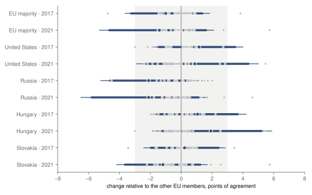
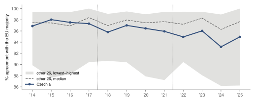
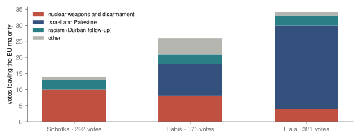

Research · politics · Czechia at the UN, 2014–2025
Czechia's votes at the UN: did agreement with the EU change between governments?
In recorded votes of the UN General Assembly, Czechia voted with the majority of the other EU members on 95 to 98 % of votes in the periods of each of its last three governments, as did the other members on average (95.9 to 96.2 %). Relative to the other members, its agreement changed by −1.0 points from the Sobotka to the Babiš period and by −1.4 points from the Babiš to the Fiala period, and neither change meets the registered rule for a shift. The question about the third Babiš government is registered and waits for the votes of late 2026.
- 2017 change, EU majority
- −1.0 pts Sobotka → Babiš periods, relative to the other EU members · 90 % −3.2 to +1.4 · rank p 0.22 of 27 · inconclusive
- 2021 change, EU majority
- −1.4 pts Babiš → Fiala periods · 90 % −4.7 to +1.6 · rank p 0.26 of 27 · underpowered · −0.3 without the emergency special sessions
- votes apart from the EU
- 14 → 26 → 34 of 292, 376 and 381 votes · Fiala period: 26 on Israel and Palestine · descriptive, topics grouped after the results
- third Babiš government
- pending tested on the votes of 16 October 2026 – 31 December 2026 · results once the UN releases data covering December 2026, expected around February 2027
Overwhelmed? Here's the short version
- Every recorded vote of the UN General Assembly on an adopted resolution from 29 January 2014 to 14 December 2025, with Czechia's agreement with the majority of the other EU members, and with the United States, Russia, Hungary and Slovakia, compared between the periods of its governments. Each change is set against the change of every other EU member over the same votes.
- Czechia voted with the EU majority on 97.6 % of votes in the Sobotka period, 96.3 % in the Babiš period and 94.8 % in the Fiala period; the other members on 96.2, 95.9 and 95.9 % on average. Relative to them, the change was −1.0 points in 2017 (inconclusive) and −1.4 points in 2021 (underpowered); most of the 2021 figure rests on 16 votes of the emergency special sessions. No estimate in stage A, for the EU majority or any partner, meets the rule for a shift, and the data do not rule out a change of a few points.
- The votes on which Czechia left the EU majority grew from 14 to 26 to 34. In the Fiala period, 26 of the 34 were on Israel and Palestine, 6 of them votes on which Czechia voted no while most of the EU voted yes. On these votes Czechia's own positions moved away from yes over the three periods, while the other members' shares changed little. Czech governments of different parties have long been among Israel's closest supporters in Europe. The topics were grouped after the results were read.
- These are associations with the periods of governments, not measures of what a government did. The headline question, on the third Babiš government, is tested on the votes of 16 October 2026 – 31 December 2026 and is pending.
In the UN General Assembly, member states vote on resolutions that range from nuclear disarmament to the budget of the UN's agency for Palestine refugees. When a state asks for a recorded vote, every member's vote is kept, and the UN Dag Hammarskjöld Library publishes these records1. The EU members coordinate in New York and usually vote alike, so how often a member votes with the rest is a plain measure of where it stands among them. Research on these records more often places states on a scale estimated from all of their votes2; this study keeps to agreement, which can be read vote by vote.
Over the years this stage covers, Czechia had three governments: Bohuslav Sobotka's from January 20143, Andrej Babiš's first and second from December 201745, and Petr Fiala's from December 2021 to 15 December 20256, when Andrej Babiš's third government took over with a new foreign minister7. The study asks whether Czechia's agreement with the EU majority, and with the United States, Russia, Hungary and Slovakia, changed between the periods of these governments by more than the other EU members' agreement changed over the same votes. Such a change is an association with a period: a new government comes with a new foreign minister, new officials and a moving world agenda, none of them separated here.
The design was registered before any Czech vote in the data was read. This page reports its first stage: the two earlier changes, in 2017 and in 2021, and the votes on which Czechia left the EU majority. The headline question, about the third Babiš government, is tested on votes cast from 16 October 2026 to 31 December 2026, after registration, and is still open.
Data
The file is version 5 of the UN's General Assembly Voting Data, published in February 2026, with one row for each member's vote on each resolution adopted by a recorded vote1. From 29 January 2014 to the end of the file on 30 December 2025 it holds 1 190 recorded votes. Paragraph votes, amendments and failed drafts are not in it. A position is yes, no or abstain; a member that did not vote has none. The EU is the 27 members of February 2020 in every period, without the United Kingdom.
The periods follow the cabinets, each appointed with its foreign minister, who instructs the mission in New York. Each later period starts 30 days after the appointment, because the December plenary adopts texts voted in committee under the old government. The Sobotka period runs from 29 January 2014, the day the cabinet was appointed and the start of the data used, to 12 December 2017: 295 votes, on 104 of which the other EU members did not all vote alike. The Babiš period runs from 12 January 2018 to 16 December 2021 (377 votes, 127 split), and the Fiala period from 16 January 2022 to 14 December 2025 (381 votes, 127 split). The first Babiš cabinet, appointed on 13 December 2017, lost its confidence vote and is pooled with the second45; the Fiala cabinet was appointed on 17 December 20216. The 38 and 16 votes in the two gaps belong to neither period.
How this was done
On each vote, Czechia's agreement with a position is 1 if it voted the same way, 0.5 if one of the two abstained and the other did not, and 0 for yes against no. The EU majority is the most common position of the other EU members that voted, and a tie drops the vote. For a partner such as Russia, the position is that partner's own vote.
The registered estimate, β, is a difference in differences on votes. On each vote, it takes Czechia's agreement minus the mean agreement of the other 26 members, each of them scored against the majority of the members other than itself and Czechia; β is the mean of that difference over the later period minus its mean over the earlier one. A β of −1 point means that Czechia's agreement fell by one point more, or rose by one point less, than the other members' over the same votes, so a change in the agenda or in a partner's own votes is not counted as a Czech change. Intervals come from resampling agenda items, the families of resolutions that return every year, within each period (2 000 draws).
The same β is computed with each other EU member in Czechia's place. The rank p is the share of all members, Czechia included, whose β divided by its standard error is at least as far from zero as Czechia's. With 27 members, a p of 0.10 or less puts Czechia among the two or three members whose change stands out most.
Each β takes the first label that applies. It is lower or higher agreement after the change if β is at least 2 points from zero, its 95 % interval excludes zero and p is at most 0.10; no change larger than 3 points if its 90 % interval lies within ±3 points; underpowered if the 90 % interval is wider than 6 points, so that the previous rule could not have applied; and inconclusive otherwise. The margin was set from a power analysis run on the other members only, before any Czech vote was read: for changes like the two of stage A, the median member's 90 % interval was 4.2 points wide, and nine in ten members moved by less than 1.3 points relative to the rest.
Checks, partners and the numbers of members
Seven checks were registered with the estimate, listed in the robustness table; two need a word. The confidence-date check starts the later periods 30 days after the confidence votes of 12 July 2018 and 13 January 2022, and the US check cuts the Fiala period at 20 January 2025, when the US government changed. Czechia's share of votes it did not cast is reported, because a government that avoids votes would be invisible to β. A cross-check against UNGA-DM, a database of General Assembly decisions compiled independently of the UN file8, tests the positions themselves.
When the partner is Hungary or Slovakia, that member is neither in Czechia's place nor among the comparison members, so its row ranks 26 members instead of 27. Other members are ranked only if they voted on at least 20 votes of the later period. The partners give twelve labels over the three changes, eight of them in this stage, reported without a correction for multiplicity; none is read on its own.
The tests
| Change | Agreement with | β, points | Rank p | Label |
|---|---|---|---|---|
| Q2a · 2017 29 January 2014 – 12 December 2017 → 12 January 2018 – 16 December 2021 | EU majority | −1.0 90 % −3.2 to +1.4 95 % −3.6 to +1.8 | 0.22 of 27 | inconclusive |
| United States (Q3) | +1.1 90 % −1.5 to +3.5 95 % −1.9 to +4.0 | 0.19 of 27 | inconclusive | |
| Russia (Q3) | −2.1 90 % −4.6 to +0.7 95 % −5.2 to +1.1 | 0.11 of 27 | inconclusive | |
| Hungary (Q3) | +1.1 90 % −1.5 to +3.7 95 % −2.0 to +4.2 | 0.31 of 26 | inconclusive | |
| Slovakia (Q3) | +0.2 90 % −2.0 to +2.4 95 % −2.4 to +2.8 | 0.73 of 26 | no change larger than 3 points | |
| Q2b · 2021 12 January 2018 – 16 December 2021 → 16 January 2022 – 14 December 2025 | EU majority | −1.4 90 % −4.7 to +1.6 95 % −5.3 to +2.1 | 0.26 of 27 | underpowered |
| United States (Q3) | +0.9 90 % −2.3 to +4.4 95 % −2.9 to +5.0 | 0.56 of 27 | underpowered | |
| Russia (Q3) | −2.1 90 % −5.8 to +1.2 95 % −6.5 to +1.7 | 0.22 of 27 | underpowered | |
| Hungary (Q3) | +1.9 90 % −1.3 to +5.2 95 % −1.9 to +5.9 | 0.23 of 26 | underpowered | |
| Slovakia (Q3) | −1.2 90 % −3.6 to +1.2 95 % −4.2 to +1.7 | 0.38 of 26 | inconclusive | |
| Q1 · 2025 16 January 2022 – 14 December 2025 → 16 October 2026 – 31 December 2026 | EU majority; partners (Q3) | pending votes not yet cast or not yet released | ||
β is Czechia's change in agreement minus the other EU members' change over the same votes. Intervals from 2 000 resamples of agenda items within each period. Rank p among the members listed. Labels by the registered rule, in order: lower or higher agreement, no change larger than 3 points, underpowered, inconclusive.
Agreement with the EU majority in 2017 and 2021
Czechia voted with the majority of the other EU members on 97.6 % of the votes of the Sobotka period, 96.3 % of the Babiš period and 94.8 % of the Fiala period. Over the same votes, the comparison members' mean was 96.2, 95.9 and 95.9 %. For the change of 2017, β is −1.0 points (90 % interval −3.2 to +1.4, 95 % −3.6 to +1.8; rank p 0.22 of 27), labelled inconclusive. For the change of 2021, β is −1.4 points (90 % −4.7 to +1.6, 95 % −5.3 to +2.1; p 0.26 of 27), labelled underpowered (fig. 1).
The 2017 interval reaches past −3 points, so although the estimate does not meet the rule for a shift, a fall of about that size is consistent with the data, and the label is inconclusive. The 2021 interval is 6.3 points wide, more than twice the margin (the median member's was 4.2 in the power analysis), so the label is underpowered. The 2021 estimate rests largely on the 16 votes of the emergency special sessions in the Fiala period, 7 under the item on the occupied Palestinian territory and 9 under the item on Ukraine. Without them it is −0.3 points, so about 79 % of it comes from those votes. Czechia left the EU majority on 7 of them, all under the item on the occupied Palestinian territory.
In 2021, Czechia's β with the EU majority was the second lowest of the 27 members' and its β with Russia the lowest, 0.1 and 0.3 points from the nearest other member. The rank p measures each β against its own uncertainty, and Czechia's was larger than most: a standard error of 1.9 points against a median of 1.1 for the other members, which fits departures concentrated in a few recurring agenda items. The changes that stood out most among the other members were Hungary's in 2017 (−4.8 points) and Sweden's in 2021 (+5.7).
No change met the registered rule; in 2021 Czechia's estimates with the EU majority and with Russia sat near the low end of the members' estimates, 0.1 and 0.3 points from the nearest other member.

A yearly view, drawn after the results and not registered, shows the levels without subtracting the other members' change (fig. 2). Each member is scored against the most common position of the other 26. Czechia's agreement ranged from 93.2 % to 98.0 % per calendar year. It was below the other members' median in every year from 2017 to 2025, by 1.0 to 3.1 points, at its lowest place 22 of 27 in 2022 and 2024. Czechia can sit above the members' mean but below their median because a few members, most often Cyprus and Austria, pull the mean down.
Described after the results: Czech agreement with the EU majority was below the other members' median in every year from 2017, by 1.0 to 3.1 points.

tools/un/describe.py). Data: UN Digital Library1.The United States, Russia, Hungary and Slovakia
Agreement with the four partners moved for the other EU members as well as for Czechia, and β subtracts that common movement. The levels below are means over the votes on which each member and the partner both have a position; β keeps only the votes on which Czechia has one, so the levels and β do not subtract exactly. With Russia, Czech agreement went from 69.2 % in the Sobotka period to 63.7 % in the Babiš period and 52.8 % in the Fiala period; the other members' mean went from 68.5 to 64.8 and 56.0 %. Relative to them, β was −2.1 points in 2017 (inconclusive, p 0.11) and −2.1 points in 2021 (underpowered). With the United States, Czech agreement was 60.6, 58.5 and 63.8 %, above the other members' 57.3, 53.7 and 58.2 % in each period, and β was +1.1 and +0.9 points (inconclusive, underpowered).
With Hungary (Czechia 98.8, 95.5 and 95.8 %; others 95.4, 91.0 and 89.4 %) β was +1.1 and +1.9 points; with Slovakia (97.8, 97.5, 95.7 % against 96.3, 95.8, 95.1 %) +0.2 and −1.2. Across all 10 estimates of this stage, 5 are inconclusive, 4 underpowered and 1 is no change larger than 3 points; the rank p ranges from 0.11 to 0.73, and none is 0.10 or less.
Votes on which Czechia left the EU majority
The registered list holds every vote on which Czechia's position differed from the majority of the other EU members: 14 of 292 votes in the Sobotka period (4.8 %), 26 of 376 in the Babiš period (6.9 %) and 34 of 381 in the Fiala period (8.9 %). The totals count votes on which Czechia voted and the majority was not tied; unlike β, the counts do not subtract what the other members did.
To read the list, the votes were grouped into four topics after the results had been seen, by words in the agenda item and the title, in this order: nuclear weapons and disarmament; Israel and Palestine, which includes the Golan and UNRWA, the UN agency for Palestine refugees; racism, meaning the follow-up to the Durban conference; and everything else. The table view of fig. 3 gives every vote with its topic. In the Sobotka period, 10 of the 14 departures were on nuclear weapons and 3 on the Durban follow-up, and none on Israel and Palestine. In the Babiš period, 10 were on Israel and Palestine, 8 on nuclear weapons, 3 on the Durban follow-up and 5 on other topics. In the Fiala period, 26 of the 34 (76 %) were on Israel and Palestine: the resolutions on Israeli settlements, on Israeli actions in occupied East Jerusalem and the rest of the occupied territory, on the question of Palestine and on UNRWA, which recur every year, and the votes of the emergency special session on the occupied Palestinian territory, among them those on Gaza.
Czechia left the EU majority on 14, then 26, then 34 votes; in the Fiala period, 26 of them concerned Israel and Palestine.

Most departures were half a step away from the majority. In the Fiala period, Czechia abstained where most of the EU voted yes on 18 votes and voted no where most abstained on 10. On 6 votes it voted no while most of the other members voted yes, all of them on Israel and Palestine. In the Sobotka period there were none, and in the Babiš period 2: Global Compact for Safe, Orderly and Regular Migration (19 December 2018) and Jerusalem (1 December 2021).
| Date | Resolution, Fiala period: Czechia no, most of the EU yes |
|---|---|
| 30 November 2022 | Special information programme on the question of Palestine of the Department of Global Communications of the Secretariat |
| 12 December 2023 | Protection of civilians and upholding legal and humanitarian obligations |
| 10 May 2024 | Admission of new Members to the United Nations |
| 18 September 2024 | Advisory opinion of the International Court of Justice on the legal consequences arising from Israel's policies and practices in the Occupied Palestinian Territory, including East Jerusalem, and from the illegality of Israel's continued presence in the Occupied Palestinian Territory |
| 11 December 2024 | Demand for ceasefire in Gaza |
| 19 December 2024 | Request for an advisory opinion of the International Court of Justice on the obligations of Israel in relation to the presence and activities of the United Nations, other international organizations and third States |
Topics come from the agenda item as well as the title. The vote of 10 May 2024, titled “Admission of new Members to the United Nations”, sits under the emergency session's item on the occupied Palestinian territory and concerns Palestine's rights in the UN.
A long-standing position
The departures on Israel and Palestine are not read here as the policy of one government. Czech governments of different parties have long been among Israel's closest supporters in Europe. Čejka traces this from Czechoslovakia's supply of arms and training to the new Israeli army in 1948–1949 to the presidency of Václav Havel, during which Czechoslovakia and then the Czech Republic “became one of the most prominent supporters of Israel”9. In November 2012, before the data used here begin, the General Assembly made Palestine a non-member observer state by 138 votes to 9 with 41 abstentions10; in Europe, Čejka notes, no state other than Czechia fully supported Israel's position9. In December 2017, in the gap between the Sobotka and Babiš periods, Czechia abstained on the resolution on the status of Jerusalem; its representative said it supported the EU position but did not believe the draft would contribute to the peace process11. A study of the Visegrád countries in 2018 found that their governments had “frequently abstained from voting in the UN General Assembly or even voted against” when the Israeli–Palestinian conflict was reviewed12.
In the Fiala period, after the attack of 7 October 2023, Prime Minister Fiala said in Israel that “the Czech Republic stands by Israel and will stand by it as long as necessary”13. Czechia and Austria were among the ten members that voted against the General Assembly's call for a humanitarian ceasefire of 12 December 202314, and among those, with Hungary, against the demand for a ceasefire in Gaza of 11 December 202416. The ministry's stated reason in December 2024 was that the resolution “fails to unequivocally link a durable ceasefire to the release of all the hostages”17; in June 2025 Czechia abstained on a resolution on Gaza, stating that the text “fails to unequivocally condemn Hamas’ unspeakable atrocities of 7 October”18. The resolution of May 2024 on Palestine's rights in the UN passed by 143 votes to 9 with 25 abstentions15; the data file records Czechia's vote against it.
Counted after the results, on the votes of the Israel and Palestine topic (table), there were 66 such votes in the Sobotka period, 57 in the Babiš period and 52 in the Fiala period, so the rise in departures does not come from more of them. The other members voted yes in 77, 74 and 75 % of their positions on them, a share that changed little, although their majority was yes on a larger part of the votes in the Fiala period (81 %, against 76 and 74 % before). Czechia's own positions moved more. It voted yes on 50 of the 66 votes in the Sobotka period (76 %), 38 of 57 in the Babiš period (67 %) and 21 of 52 in the Fiala period (40 %), and no on 0, 7 and 13. The move away from yes began in the Babiš period and went further in the Fiala period, under governments of different parties, as new texts on Gaza came to the vote from October 2023; the data cannot say what accounts for it.
| Period | Votes on Israel and Palestine | Czechia yes / abstain / no | Other 26 members yes / abstain / no | Their majority yes / abstain / no |
|---|---|---|---|---|
| Sobotka | 66 of 295 | 50 / 16 / 076 % yes | 77 / 23 / 0 % | 50 / 16 / 0 |
| Babiš | 57 of 377 | 38 / 12 / 767 % yes | 74 / 23 / 3 % | 42 / 15 / 0 |
| Fiala | 52 of 381 | 21 / 18 / 1340 % yes | 75 / 20 / 5 % | 42 / 8 / 2 |
Votes of the Israel and Palestine topic by the rule of tools/un/departures.py, defined after the results; the other members' shares are of all their positions on these votes. Described after the results, not registered (tools/un/positions.py).
Robustness
The checks are not used to relabel an estimate (§7). Under the same rule, applied to their intervals with the primary estimate's rank p, some would carry a different label: the 2017 change on split votes only would be underpowered (registered: inconclusive); the 2017 change on no half point for an abstention would be underpowered (registered: inconclusive); the 2021 change on regular sessions only would be inconclusive (registered: underpowered). None would meet the rule for a shift. The largest moves come from split votes only, the votes on which a member's departures have room to show: β is −2.8 points for 2017 and −4.2 points for 2021, with 90 % intervals of −9.0 to +3.5 and −13.3 to +5.0, from 126 and 127 votes in the later periods. Without the emergency special sessions, the 2021 estimate is −0.3 points. With the United States, the Fiala period cut at 20 January 2025 gives +1.5 points (−2.0 to +5.4). The other checks stay within 0.4 points of the registered estimates.
| Agreement with the EU majority unless stated | 2017 change β, 90 % interval, votes before/after, label by the same rule | 2021 change |
|---|---|---|
| registered estimate, EU majority | −1.0 −3.2 to +1.4 292 / 376 votes inconclusive | −1.4 −4.7 to +1.6 376 / 381 votes underpowered |
| split votes only (§7.1) | −2.8 −9.0 to +3.5 102 / 126 votes underpowered | −4.2 −13.3 to +5.0 126 / 127 votes underpowered |
| no half point for an abstention (§7.2) | −1.4 −5.3 to +2.8 292 / 376 votes underpowered | −1.8 −6.9 to +3.2 376 / 381 votes underpowered |
| after period from the cabinet date, no buffer (§7.3) | −1.3 −3.4 to +1.0 292 / 414 votes inconclusive | −1.4 −4.5 to +1.5 376 / 397 votes underpowered |
| comparison without Hungary and Slovakia (§7.4) | −1.2 −3.6 to +1.3 292 / 376 votes inconclusive | −1.5 −5.0 to +1.7 376 / 381 votes underpowered |
| regular sessions only (§7.5) | −1.1 −3.3 to +1.3 292 / 375 votes inconclusive | −0.3 −3.0 to +2.4 375 / 365 votes inconclusive |
| after period from the confidence vote (§7.6) | −1.1 −3.4 to +1.3 292 / 371 votes inconclusive | −1.4 −4.7 to +1.6 376 / 381 votes underpowered |
| with the United States, Fiala period before 20 January 2025 (§7.7) | – | +1.5 −2.0 to +5.4 377 / 271 votes underpowered |
Czechia voted on every vote of the Babiš and Fiala periods and missed 2 (0.7 %) in the Sobotka period, so absences cannot hide a change of any size. Ties among the other members dropped 1, 1 and 0 votes on which Czechia voted. For sessions 68 to 77, 122 236 of the file's 157 295 pairs of a member and a resolution (78 %) could be matched by member name and resolution symbol to UNGA-DM8, and 99.96 % of the matched pairs record the same position.
The third Babiš government, still to be tested
The headline question is registered and not yet answered. Its β compares Czechia's agreement with the EU majority in the Fiala period, 16 January 2022 to 14 December 2025, with the votes cast from 16 October 2026 to 31 December 2026, net of the other members' change, with the same frozen code; the partners are compared in the same way. The votes from 15 December 2025 to registration are public, but no Czech position among them has been read; stage B lists them as a separate block, untested. Version 5 of the file, ending in December 2025, came out in February 2026, so results are expected around February 2027; if no version covering December 2026 is out by 30 April 2027, the change log will say so.
The result will take the labels above. With about 80 to 82 votes in one autumn, the power analysis put the median member's 90 % interval at up to 5.0 points, so for a typical member a change of about 3 points or more can be told from ordinary movement and one of a single point cannot. Czechia is not a typical member here. Its standard error in the two stage A changes was 1.4 to 1.9 points, against 1.1 to 1.2 for the median member, which fits departures clustered in a few agenda items. Scaling the median member's interval by that ratio, a rough projection computed in article.py and not registered, gives a Czech 90 % interval about 5.6 to 8.1 points wide, around the 6-point bound beyond which a result is underpowered, so the headline question may well come out underpowered for Czechia.
Lower agreement after the change would need a fall of at least 2 points relative to the other members, a 95 % interval below zero and a rank p of 0.10 or less; Czech agreement in the Fiala period, 94.8 %, leaves only 5.2 points for higher agreement.
The author stated her expectation on 15 October 2026, before any Czech vote was read: “I expect a greater lean towards 'Trumpist' policy, and perhaps a greater lean towards Hungary, Russia and Slovakia, though with the Russian invasion of Ukraine in mind” (in Czech: „očekávám větší náklon k 'trumpistické' politice a možná větší náklon Maďarsko, Rusko, Slovensko, ale s ohledem na ruskou invazi na Ukrajinu“). It concerns the partners in the third Babiš period, part of stage B; she stated no expectation for the EU majority or the earlier changes, so nothing on this page tests it.
What this does not show
It does not show what a government did. A UN vote is cast by the mission on instructions, and this design cannot say who decided a vote, or whether a change came from the government, the ministry, the officials or the agenda. Each period mixes changes of prime minister, coalition and foreign minister. The foreign minister was Lubomír Zaorálek, nominated by ČSSD, through the Sobotka period19. In the Babiš period it was Martin Stropnický from December 2017 to June 20184; Jan Hamáček, chair of ČSSD, ran the ministry from June to October 2018 and again in April 202120; Tomáš Petříček was minister from October 2018 to April 2021 and Jakub Kulhánek from April 20215. In the Fiala period it was Jan Lipavský6, and in the third Babiš government it is Petr Macinka, chair of Motoristé sobě7.
Positions on failed drafts, amendments and single paragraphs are not seen. Agreement sits near its ceiling, so a handful of votes moves the estimate; the 2021 estimate rests largely on the emergency special sessions. The partners change too: the United States in January 2025, Slovakia in October 2023, and Hungary held a parliamentary election in April 2026, so the partner estimates mix Czech changes with theirs. The headline question rests on one autumn's votes, about 80 to 82. The grouping of departures by topic and the count of positions on Israel and Palestine were made after the results and are reading aids, not tests.
Reproduction
Every number on this page is filled in by a script from results.json, the screening and power files, departures.json, describe.json and positions.json. From the repository root, with the UN file in tools/data/un/:
tools/un/screen.pyandpower.py: screening and power, without Czech positions.estimate.py--stage A: the registered estimates, checks and the list of departures, with the definitions invotes.pyand tests intest_un.py.departures.py,describe.pyandpositions.py: the descriptions drawn after the results.article.py: the figures, the check labels, the rough projection and this page.
The design is docs/research/un-votes-design.md.
References
- UN Dag Hammarskjöld Library (2026) General Assembly Voting Data, version 5 (February 2026). New York: United Nations. Available at: https://digitallibrary.un.org/record/4060887 (Accessed: 15 October 2026).
- Bailey, M.A., Strezhnev, A. and Voeten, E. (2017) ‘Estimating dynamic state preferences from United Nations voting data’, Journal of Conflict Resolution, 61(2), pp. 430–456. doi: 10.1177/0022002715595700.
- Vláda České republiky (2014) Přehled členů vlády Bohuslava Sobotky (29. 1. 2014 – 13. 12. 2017). Available at: https://vlada.gov.cz/cz/clenove-vlady/historie-minulych-vlad/prehled-vlad-cr/1993-2013-cr/bohuslav_sobotka/prehled-clenu-vlady-bohuslava-sobotky-29-01-2014---trva-124534/ (Accessed: 15 October 2026).
- Vláda České republiky (2018) Přehled členů vlády Andreje Babiše (13. 12. 2017 – 27. 6. 2018). Available at: https://vlada.gov.cz/cz/clenove-vlady/historie-minulych-vlad/prehled-vlad-cr/1993-2017-cr/andrej-babis-i/prehled-clenu-vlady-andreje-babise-13-12-2017-27-06-2018-166989/ (Accessed: 15 October 2026).
- Vláda České republiky (2021) Členové druhé vlády Andreje Babiše (27. 6. 2018 – 17. 12. 2021). Available at: https://vlada.gov.cz/cz/clenove-vlady/historie-minulych-vlad/prehled-vlad-cr/1993-2018-cr/andrej-babis-ii/prehled-clenu-vlady-andreje-babise-27-6-2018-trva-175411/ (Accessed: 15 October 2026).
- Vláda České republiky (n.d.) Petr Fiala. Available at: https://vlada.gov.cz/scripts/detail.php?pgid=1567 (Accessed: 15 October 2026).
- Ministerstvo zahraničních věcí České republiky (n.d.) Petr Macinka. Available at: https://mzv.gov.cz/jnp/cz/o_ministerstvu/struktura/ministr/petr_macinka.html (Accessed: 15 October 2026).
- Fjelstul, J., Hug, S. and Kilby, C. (2025) ‘Decision-making in the United Nations General Assembly: a comprehensive database of resolution-related decisions’, The Review of International Organizations, 21(2), pp. 447–464. doi: 10.1007/s11558-024-09580-1.
- Čejka, M. (2017) ‘The narrative of the Czech-Israeli strategic relations in the European context’, Central European Journal of International and Security Studies, 11(4), pp. 24–43. Available at: https://cejiss.org/images/issue_articles/2017-volume-11-issue-4-0/24-cejiss-cejiss-0417-electronic.pdf (Accessed: 15 October 2026).
- UN News (2012) ‘General Assembly grants Palestine non-member observer State status at UN’, 29 November. Available at: https://news.un.org/en/story/2012/11/427052 (Accessed: 15 October 2026).
- United Nations (2017) ‘GA overwhelmingly adopts resolution asking nations not to locate diplomatic missions in Jerusalem’, press release GA/11995, 21 December. Available at: https://www.un.org/unispal/document/ga-overwhelmingly-adopts-resolution-asking-nations-not-to-locate-diplomatic-missions-in-jerusalem-ga11995/ (Accessed: 15 October 2026).
- Dyduch, J. (2018) The Visegrád Group’s policy towards Israel: common values and interests as a catalyst for cooperation. SWP Comment 2018/C 54. Berlin: Stiftung Wissenschaft und Politik. Available at: https://www.swp-berlin.org/en/publication/the-visegrad-groups-policy-towards-israel (Accessed: 15 October 2026).
- Government of the Czech Republic (2023) ‘Prime Minister Fiala held talks in Israel with Prime Minister Netanyahu and President Herzog’, 25 October. Available at: https://uv.gov.cz/en/media-centrum/aktualne/prime-minister-fiala-held-talks-in-israel-with-prime-minister-netanyahu-and-president-herzog-209565/ (Accessed: 15 October 2026).
- UN News (2023) ‘UN General Assembly votes by large majority for immediate humanitarian ceasefire during emergency session’, 12 December. Available at: https://news.un.org/en/story/2023/12/1144717 (Accessed: 15 October 2026).
- UN News (2024) ‘UN General Assembly presses Security Council to give “favourable consideration” to full Palestinian membership’, 10 May. Available at: https://news.un.org/en/story/2024/05/1149596 (Accessed: 15 October 2026).
- UN News (2024) ‘UN General Assembly demands Gaza ceasefire and hostage release, affirms “full support” for UNRWA’, 11 December. Available at: https://news.un.org/en/story/2024/12/1158116 (Accessed: 15 October 2026).
- Ministry of Foreign Affairs of the Czech Republic (2024) ‘Explanation of vote on the UN resolution – 11 December 2024’, 11 December. Available at: https://mzv.gov.cz/jnp/en/issues_and_press/mfa_statements/explanation_of_vote_on_the_un_resolution.html (Accessed: 15 October 2026).
- Ministry of Foreign Affairs of the Czech Republic (2025) ‘Explanation of vote on the resolution on the protection of civilians and the humanitarian situation in Gaza’, 12 June. Available at: https://mzv.gov.cz/jnp/en/issues_and_press/mfa_statements/explanation_of_vote_on_the_resolution_on.html (Accessed: 15 October 2026).
- Vláda České republiky (2014) Lubomír Zaorálek. Available at: https://vlada.gov.cz/cz/clenove-vlady/lubomir-zaoralek-115390/ (Accessed: 15 October 2026).
- Vláda České republiky (2018) Jan Hamáček. Available at: https://vlada.gov.cz/cz/clenove-vlady/jan-hamacek-167024/ (Accessed: 15 October 2026).